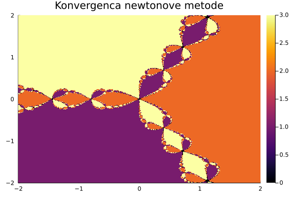

Konvergenčna območja iteracijskih metod
Za reševanje nelinearnih enačb so najbolj pogosto uporablja iteracijske metode, pri katerih približek za rešitev konstruiramo z rekurzivno formulo. Konstrukcija rekurzivnega zaporedja zagotavlja, da je limita zaporedja približkov vedno rešitev enačbe. Glavna težava je, če zaporedje sploh konvergira in h kateri rešitvi konvergira. To je v veliki meri odvisno od začetnega približka in lastnosti funkcije v okolici rešitve.
Kompleksni koreni enote
Kot primer si poglejmo enačbo za kompleksne korene enote. Vemo, da ima enačba
\[z^n = 1\]
\[n\]
kompleksnih rešitev, ki ležijo enakomerno razporejene na enotskem krogu. Poglejmo si, kako konvergira Newtonova metoda, v odvisnosti od začetnega približka.
using NumMat
using Plots
n = 3
f(z) = z^(n)-1
df(z) = n*z^(n-1)
metoda((x, y); maxit=20, tol=1e-3) = newton(f, df, x + y*im; maxit=maxit, tol=tol)
meje = (-2, 2, -2, 2)
x, y, Z = konvergencno_obmocje(meje, metoda, n=500, m=500)
heatmap(x, y, Z', title="Konvergenca newtonove metode")
savefig("01_konvergenca.png")
Koda
NumMat.konvergencno_obmocje — Methodx, y, Z = konvergencno_obmocje(obmocje, metoda; n=50, m=50, maxit=50, tol=1e-3)Izračuna, h katerim vrednostim konvergira metoda metoda, če uporabimo različne začetne približke.
Primer
Konvergenčno območje za Newtonovo metodo za kompleksno enačbo $z^3=1$
julia> F((x, y)) = [x^3-3x*y^2; 3x^2*y-y^3];
julia> JF((x, y)) = [3x^2-3y^2 -6x*y; 6x*y 3x^2-3y^2]
julia> metoda(x0) = newton(F, JF, x0; maxit=10; tol=1e-3);
julia> x, y, Z = konvergencno_obmocje((-2,2,-2,2), metoda; n=5, m=5); Z
5×5 Array{Float64,2}:
1.0 1.0 2.0 3.0 3.0
1.0 1.0 2.0 3.0 3.0
1.0 1.0 0.0 3.0 3.0
2.0 2.0 2.0 2.0 2.0
2.0 2.0 2.0 2.0 2.0NumMat.newton — Methodx, it = newton(f, df, x0; maxit=100, tol=1e-12)Poišči ničlo funkcije f z Newtonovo metodo. Če Newtonova metoda ne konvergira naj metoda vrne par nothing, maxit.
Primer
Poiščimo $\sqrt{2}$ kot ničlo funkcije $f(x)=x^2-2$:
julia> newton(x->x^2-2, x->2x, 1.5)
(1.4142135623730951, 4)